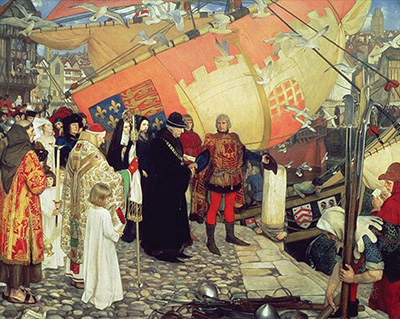

Economic History of Canada
In this course, we will focus on Canadian labour markets. Learning about Canada’s economic and labour history will help you to better appreciate how Canada’s unique labour conditions came into being and can provide you with clues about future trends.
Review the timeline below for a brief history of Canada’s early economic history.
Scroll down to reveal the timeline. If you are having difficulty, view the text version of this page.
-
<1500
Early Trade and First Nations
The economic history of Canada began long before European settlement. For thousands of years, Aboriginal peoples have traded materials and resources, mostly using trade routes along the major waterways of North America.
-
1500s
Integration of Europeans
Starting in the 1500s, European colonizers integrated themselves into this trade economy by focusing around resource extraction of fur, timber, minerals, and fish for shipment to transatlantic markets. Different geographic regions (Atlantic, Central, West) each focused on different resources. Settlers and traders mostly traded raw materials and received finished manufactured goods that were developed in Europe.
 -
1700s
Growth of Skilled Trades
By the 1700s, skilled craftspeople started to immigrate to Canada from Europe to produce manufactured goods in small workshops for locals. Farmers, merchants, craftspeople, and hunters worked in very small individual economic units, organized mostly by family. Large companies did not exist in this time period, and people’s skills were often highly specialized towards their one vocation. Transportation was facilitated primarily through the use of human, animal, wind, and water power.
-
1900s
Immigration and Expansion
Resource extraction for foreign markets persisted as a key economic activity in Canada well into the 20th century, generally increasing in scale as the population grew. Populations grew in settlements from small towns to larger and larger cities, and significant numbers of immigrants began to immigrate to Canadian cities from Northern and Eastern Europe and East Asia. Just after 1900, about as many people lived in cities as in the countryside.
Supplementary Reading
For further reading on Canadian economic and labour history start with the Government of Canada Discover Canada site. You may also want to consult one of these optional additional resources (Note: You may need to scroll up to see the list.) . See the Resource List for additional background information.
Image Copyright:
Discover Canada. Government of Canada. Indian Encampment, Fur Trade Era. Public Domain.
Discover Canada. Government of Canada. John Cabot "discovers" Newfoundland (1497). Public Domain.
Joseph Wright of Derby. An Iron Forge 1772. 2011-07-16. Licensed under Public Domain via Commons.
Photographer and source unknown. Library and Archives Canada/C-075992. (1905) Immigrants on arrival (Saint John, N.B.). No restrictions on use.
{kind=link}